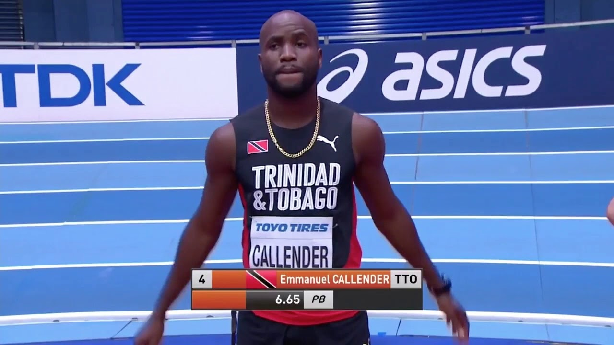

Trinidad and tobago is one of the countries that have participated in the olympics over the last 30 years.they have participated in various track and field events some witch are 100, 200 and 400 meter sprints, relays, boxing,cycling,sailing,swimming,badmintion,table tennis, long jump, marathon, taekwondo, shooting and gymnastics they participate in many events even if they did not win medals for all events they still participated.
Trinidad mostly excel in Athletics
Emmanuel Callender2008 olympic games 4×100 m relay Gold Medalist, 2012 Olympic Games 4X100M Silver Medalist and 2008 Olympic Games 4X100m relay Silver Medalist and
According to newsday.co National sprinter and double Olympic medallist Emmanuel Callender is concerned over the future of (TT) track and field and is holding the authorities accountable for the state of the sport locally. In an interview callender was asked about his plans for 2019 and he replied: "My plan for the 2019 season is to try to win every race. That is why we train hard most of the year, for a race that takes a few seconds. The reality is somebody will beat you at some point, even (Usain) Bolt, so it’s not just about winning, it’s how you compete to win. In order to achieve this, I look at off-the-track responsibilities as well as government, sponsors, fans and persons needing inspirations. I will use this momentum, of this year, to compete at next year’s Japan Olympics where I plan to retire".
Another question was:How do you see the future of (TT) trinidad and tobago track and field, especially sprinting? Who are the ones you see taking over when you step aside?and he replied
"First of all, the future has never been bright from the get-go. The history would show how athletes struggled to get somewhere, before and after the sport. ‘The sky is the limit’ does not apply to TT. Some people do their best to keep the sky dark and ride the bandwagon of one star, when he/she emerges. They are not concerned (about) other developing stars. It is a fact, I know what I’m saying. I speak to a lot of athletes, or a lot of athletes come to speak to me.
The younger athletes’ mentality is to perpetuate this cycle of hatred by helping to tear down aspirations of others who are doing well, just to be the one star. Look at what’s happening with crime. It’s the same thing with sport. Look at how may sporting bodies right now are in court. That speaks for itself. How do I see the future of track and field? It’s not looking like a good one. I think there needs to be a lot of changes, I believe, at the administrative level.
I think that there are some people who just really are not concerned about you. They speak it but they’re not really manifesting what they are speaking about. I came into the sport, hoping to be a change and an inspiration to others, by the gift that God has given me. I know, in life, there are struggles you would face, but when you see your own trying to tear you down, that is something (else). It’s just really sad".
With the trinidad and tobago flag waving and her parents cheering at the finish line, Abigail Viera made History by becoming the first Athlete from the Dual-island Caribbean netion to compete at a winter youth Olympic Games.
The 17-year-old Alpine skier was born in the United States but chose to represent her parents’ homeland at Lausanne 2020.
A day after serving as Trinidad and Tobago’s flagbearer in the Opening Ceremony, Vieira competed in the women’s Super-G at Les Diablerets, the first medal event at Lausanne 2020.
She placed 42nd out of 62 competitors, finishing in 1 minute, 2.58 seconds. But neither the time nor the result mattered: representing the nation on the global stage was what counted most.